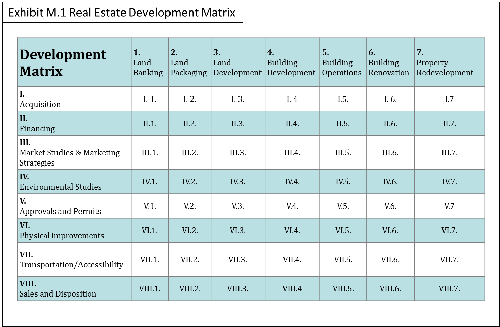

How to Use the Matrix
Overview of the Matrix
The Real Estate Development Matrix combines the seven stages of the real estate development process with the eight tasks that must be completed during each stage. This 56-cell matrix captures the real estate development activities in a comprehensive and holistic manner. This broad view of the real estate development process considers the entire lifespan of a property over seven stages:
- Land Banking Stage
- Land Packaging Stage
- Land Development Stage
- Building Development Stage
- Building Operations Stage
- Building Renovation Stage
- Property Redevelopment Stage
This process may take several decades to complete, and then the cycle starts again as the redevelopment property goes back to the land packaging stage and process begins anew. The development tasks are also considered in a very broad sense as they are grouped into eight categories:
- Acquisition
- Financing
- Marketing Studies/ Strategies
- Environmental
- Approvals/ Permits
- Improvements
- Transportation/Accessibility
- Sales/Disposition
When the seven stages of real estate development are placed on a horizontal axis, and the eight categories of tasks of development are placed on the vertical axis, we create the Real Estate Development Matrix (Exhibit M.1) which lays out the "work space" for the real estate development activities into 56 cells.
As Exhibit M.2 illustrates, the individual cells in the Development Matrix can be identified using Arabic Numbers for the Development Stages across the rows and Roman Numerals for the Development Tasks down the columns as identifiers. For example, Cell I.1. would be the Acquisition Tasks in the Land Banking Stage. Cell III. 4. would be the Marketing Tasks in the Building Development Stage, and so on.

Not all cells have the same importance in every stage, but all of the cells must be addressed in one way or the other. Ignoring or over-looking cells can lead to mistakes, errors, and ultimately an unsuccessful real estate development project.
Developers create value in each stage of development by completing the tasks for that stage. Each stage requires different skills to complete the task, and no one person can do everything. Hence, different development teams are formed for each stage of development.
It is important to note that in each cell three things happen:
- Expenditures are made.
- Risks are taken.
- Value is created or destroyed.
The Developers work down the columns of the Matrix. They can't go to the next Stage of Development until all the Development Tasks of the current stage are completed. Each Stage begins with the Acquisition Tasks and ends with the Disposition Tasks. (See Exhibit M.3) In between, Tasks are done in various orders, usually simultaneously, as the Tasks are all related to each other. For example, you can't get a building permit until the environmental studies have done and the plans and specifications have been completed. Real estate development is a great example of "multi-tasking."
The Disposition Tasks may lead the developer to the decision "not to sell" and instead continue on to the next Stage of Development. Through the Disposition Tasks, the developer is well aware of the value that he has created, as well as the tasks that are required for the next stage of development. Even if the developer decides to continue to the next Stage of Development and put the created economic value at risk, he must assemble a new team of professionals to accomplish the Task for the next Stage and hopefully create additional value. Sometimes this works; sometimes it doesn't.
Many times real estate service providers (professionals) ask, "Where do we belong in the Development Matrix? The answer is everywhere! Professionals generally specialize in one Task category and work across the various Stages of the Process (see Exhibit M.4).
However, it should be noted that different types of professionals are used in the various stages of development. For example, the best land broker used in the Land Banking Stage would not be used in the Building Development Stage, where the best leasing agents and building brokers would be used by the developer. Also the building contractor in the Building Development Stage would probably not have the necessary skills for the construction required in the Building Renovation Stage.